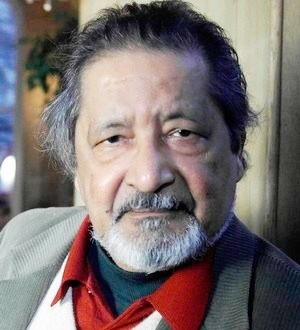
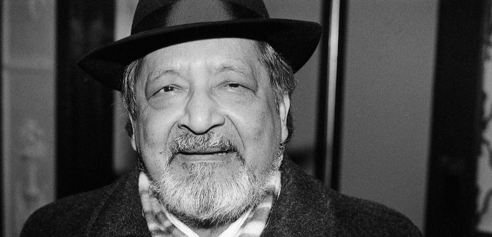

Vidiadhar Surajprasad Naipaul [1932 - 2018]
Với tư cách nhà văn, Naipaul từng tuyên bố rằng tiểu thuyết đã chết, điều ông muốn ám chỉ rằng các nhà văn chuyên nghiệp hiện nay đều giống như một khuôn đúc sẵn về kết cấu thiên truyện, về nhân vật và sự kiện và tuôn vào đó một mớ ngôn từ rẻ tiền.
Mặc dù đang vun xới một cuộc sống lặng lẽ như một quý tộc ẩn dật, Vidiadhar Surajprasad Naipaul [1932 - 2018] vẫn cảm thấy mình còn nằm ở trung tâm những cuộc chiến và những cuộc cãi vã. Nhà văn này, một người thường ăn chay và sáng nào cũng tập thể dục, đã từng chọc tức Thủ tướng Anh Tony Blair, gọi ông ta là kẻ “hạ đẳng” vì đã nhận chìm văn hóa và học vấn của nước Anh, từng tố cáo nhà văn E.M.Forster và nhà kinh tế học John Maynard Keynes là những kẻ bóc lột đồng tính luyến ái đối với những kẻ vô quyền. Những lời ca ngợi nồng nhiệt và xứng đáng mà các đồng nghiệp dành cho ông trước đây về văn tài và sự phân tích sâu sắc các xã hội hậu thuộc địa qua những thiên tiểu thuyết, truyện du ký và những bài báo - những sự chỉ trích chết người về những nhiễu nhương mà nhiều đất nước đã lâm vào do hậu quả của nên thống trị thực dân - đã báo trước sự tôn vinh chính thức bằng giải thưởng Nobel. V.S.Naipaul kể ra những câu chuyện nói lên chính bản thân chúng ta và thực tế mà ta đang sống. Ông dùng một thứ ngôn từ vừa chính xác vừa đẹp đẽ.
Ông sinh ra ở Trinidad (một hòn đảo trong quần đảo Antilles), là hậu duệ của người Ấn Độ đi làm phu đến hòn đảo này, một đứa con bị tước đoạt mà thuở trưởng thành gần gũi với mọi cảnh đói nghèo về vật chất cũng như về học vấn. Một học bổng của Đại học Oxford đã đưa chàng trai đến nước Anh và chả có gì nâng đỡ anh sau đó ngoài quyết tâm trở thành nhà văn mà bao lần từng cận kề với nỗi tuyệt vọng. Nhưng khác với bình thường, tinh thần hài hước đã chảy tràn qua những tác phẩm ban đầu của ông như một sự cứu rỗi.
Naipaul đã có những chuyến lãng du dài đến Ấn Độ và châu Phi. Đấy là thời kỳ phi thực dân hóa, khi mà nhiều dân tộc khắp thế giới phải nhìn lại bản sắc của mình. Bản thân ông đã tự mắt thấy sự hỗn loạn của những tình cảm, sự đụng độ giữa huyền thoại tự trấn an và những tội lỗi đã tạo ra thế giới kinh hoàng ngày nay và ngăn cản người ta có thể hòa hợp với thực tại và biết cách đối xử với nhau. Qua những chuyến đi đó, ông đã khám phá ra những gì thuộc về văn hóa và lịch sử.
Thân phận nạn nhân phải chăng đã là chủ đề trung tâm trong các tác phẩm của ông dựa trên trải nghiệm của đời mình? Không hề như vậy. Việc quyết tâm trở thành nhà văn còn giải phóng ông thoát ra sự tự thương hại, mà các tác phẩm của ông đã chỉ ra. Mọi người trong chúng ta có thể chọn lựa làm một cá nhân tự do. Đấy là vấn đề của ý chí và lựa chọn, và trên hết là của trí tuệ. Các nhà phê bình đôi khi lập luận rằng người ta - đặc biệt trong thế giới thứ ba - bị giam hãm trong nền văn hóa và lịch sử của họ, không có được khả năng lựa chọn và chỉ được tự do khi kẻ khác giải phóng họ. Theo ông, việc họ phải chịu trách nhiệm với bản thân mình chính là sự chối bỏ hoàn toàn thân phận nạn nhân, điều cần thiết nếu ta muốn được bình đẳng. Và chính điều đó đã làm cho công luận hiểu ra ông hơn bất cứ một nhà văn nào khác, cũng như đã khiến Naipaul trở thành nhà văn tầm cỡ thế giới và đầy tính nhân văn.
Ông đã viết về chế độ nô lệ, cách mạng, du kích, những chính khách tham nhũng, người nghèo và bị áp bức, nói lên những phẫn nộ từng cắm sâu vào các xã hội chúng ta, bằng một giọng hài hước và cả nỗi đắng cay. Rất lâu trước những người khác, ông đã nói đến sự cuồng tín trong thế giới đạo Hồi, một sự trốn chạy lịch sử bằng thứ huyền thoại tự trấn an, đóng cửa với mọi thực tế và trở nên bất lực trước sự áp đặt những chuẩn mực của phương Tây.
Bản thân Naipaul là một con người riêng tư, ẩn cư ở nước Anh để suy ngẫm và viết. Những gì xảy ra đối với bản thân ông đã được ghi nhận với sự chính xác tuyệt vời của ký ức. Ông có thể đưa ra những cuộc luận đàm, và ông đã đọc rất nhiều. Điều khiến ông khắc khoải là cảnh tượng tàn tạ không cưỡng nổi của “thế giới cũ”, như ông nói, và đang phải sống trong “một nền văn hóa dung tục đang tự tôn vinh”.
Với tư cách nhà văn, Naipaul từng tuyên bố rằng tiểu thuyết đã chết, điều ông muốn ám chỉ rằng các nhà văn chuyên nghiệp hiện nay đều giống như một khuôn đúc sẳn về kết cấu, về nhân vật và sự kiện và tuôn vào đó một thứ ngôn từ rẻ tiền. Những thiên truyện của ông đúng là thứ tiểu thuyết theo đúng nghĩa của nó: Mới mẻ, phá công thức, đầy thể nghiệm, một thứ lai giống giữa tự truyện, khảo sát xã hội, phóng sự và sự sáng tạo.
Về nhà văn mang thứ văn phong hài hước nhức nhối trên một thực tế ảm đạm này, Viện Hàn lâm Thụy Điển đã chọn cuốn tiểu thuyết tự thuật The Enigma Of Arrival (Sự bí hiểm của việc cập bến) xuất bản năm 1987 của ông là tác phẩm tiêu biểu, cho rằng đấy là “hình ảnh mãi khuấy động về sự sụp đổ âm thầm của nền văn hóa thống trị thực dân”. Ủy ban trao giải còn đề cập đến những cuốn du ký và tác phẩm tư liệu của ông trong đó ông chỉ trích những người Hồi giáo chính thống, coi đó là sự phản ứng câm lặng cần thiết trong tình thế hiện nay. Ông miêu tả việc “tiêu hủy bản ngã mà những người Hồi giáo chính thống đòi hỏi còn tệ hại hơn sự xóa bỏ bản sắc của chế độ thực dân”.
Đánh giá sự nghiệp văn học của ông, Viện Hàn lâm Thụy Điển nhận xét trong thông báo trao giải: “V.S. Naipaul là một nhà chu du thế giới trong văn học, chỉ thật sự cảm thấy ở nhà trong chính bản thân mình, trong tiếng nói riêng không ai bắt chước được. Đơn giản không bị ảnh hưởng bởi trào lưu và những khuôn mẫu văn học, ông đã nhào nặn những thể loại sẵn có thành một phong cách riêng trong đó sự phân biệt quen thuộc giữa hư cấu và tư liệu chỉ có tầm quan trọng thứ yếu”.
“Khung cảnh văn học của ông đã vượt xa hơn hòn đảo Trinidad, chủ đề ban đầu của ông, và bao gồm Ấn Độ, châu Phi, châu Mỹ từ Nam đến Bắc, các nước Hồi giáo châu Á và cả nước Anh - Naipaul là người thừa kế Conrad với tư cách nhà biên niên sử về số phận các đế quốc về mặt tinh thần, những gì mà chúng tạo ra cho loài người. Quyền lực của ông với tư cách là nhà kể chuyện dựa trên ký ức bản thân mà những người khác đã lãng quên: lịch sử về những người bị chinh phục”.

.Năm 18 tuổi, nhờ được nhận một khoản học bổng, V.S.Naipaul sang Anh học Văn khoa tại Trường ĐHTH Oxford. Sau đó ông định cư tại Anh, nhưng thường xuyên đến các nước, từ Ấn Độ - quê hương của tổ tiên ông - cho tới châu Phi và Đông Nam Á để viết văn. Ông được coi là một trong những cây bút có văn phong độc đáo nhất của văn học đương đại Anh. Sau nhiều năm liên tục lọt vào danh sách ứng cử viên đoạt giải Nobel văn học, năm 2001 ông đã được Viện Hàn lâm Thụy Điển trao giải thưởng danh giá này.
Sir V.S.Naipaul (ông được Nữ hoàng Anh phong tước hiệp sĩ năm 1990) có cuộc trò chuyện với báo chí Đức nhân dịp sinh nhật lần thứ 70 của mình:
* Ông vẫn viết bằng bút? Tại sao ông không dùng máy vi tính có tiện hơn không?
– Trong một chừng mực nào đó, dùng vi tính quả có tiện hơn. Nhưng tôi nghĩ để tạo ra một bản gốc độc đáo, thì nhất thiết phải viết bằng bút. Viết bằng tay là một cái gì đó thật đặc biệt, đầy ma lực.
* Cuối tuần qua ông tròn 70 tuổi. Ở tuổi đó, theo ông có gì là thú vị?
– Đó là sự tĩnh tại. Người ta không nhất thiết phải viết nữa. Không còn ham hố. Những nỗi buồn bực, tức giận cũng không còn nữa.
* Giải Nobel ông được trao là một giải thưởng nhằm tôn vinh những tác phẩm xuất sắc của nền văn học thế giới. Liệu có một nền văn học như vậy không?
– Tôi nghĩ là có. Văn học thế giới là thứ mà bất cứ một người nào cũng có thể hiểu, cũng có thể nhập cuộc, cho dù anh ta xuất thân từ một truyền thống văn hóa hoàn toàn khác.
* Nếu ông không viết bằng tiếng Anh, mà bằng một ngôn ngữ khác, liệu ông có cơ hội tham dự vào nền văn học thế giới hay không?
– Theo tôi ngôn ngữ nào cũng có khả năng hiện diện trong nền văn học thế giới, một khi nó sản sinh ra được những tác phẩm có tầm cỡ và đạt chất lượng.
* Ông có e ngại rằng khi các tác phẩm của ông được dịch ra một ngôn ngữ khác, văn phong của ông sẽ bị biến đổi và chúng sẽ mất đi một điều gì đó quan trọng?
– Tôi nghĩ tôi đã gặp nhiều may mắn với những người dịch các tác phẩm của mình, đặc biệt là những dịch giả tiếng Pháp. Còn với các ngôn ngữ khác, thực tình tôi không kiểm tra được.
* Ông vẫn than phiền về việc có những dân tộc hay xã hội đã để mất lịch sử của mình, khi có nhiều sự kiện hay giai đoạn lịch sử không được ghi chép lại. Vậy người ta phải viết sử như thế nào mới là đủ?
– Chẳng hạn người ta không thể lãng quên cả một giai đoạn lịch sử như người Ấn Độ đang làm, đó là giai đoạn từ năm 1080 cho tới khi có sự xuất hiện của người châu Âu. Người Ấn Độ đã bỏ qua cả thời kỳ ấy. Người ta cần phải nắm lại lịch sử của mình. Phải mổ xẻ, phân tích nó. Nếu không làm được điều đó, người ta không thể rút ra được những bài học kinh nghiệm cho tương lai.
* Trong lời đáp từ sau khi nhận giải Nobel, ông đã cảm ơn “nước Anh - ngôi nhà của tôi, và Ấn Độ - đất nước của tổ tiên tôi”. Vì sao ông không nhắc tới đảo Trinidad, nơi ông sinh ra, sống đến năm 18 tuổi và cũng là nơi tạo hậu cảnh cho những tiểu thuyết đầu tay của ông như Người tẩm quất bí ẩn, Miguel Street, Một ngôi nhà cho Ngài Biswas?
– Vì sao tôi phải làm điều đó? Những cuốn sách ấy là do tôi viết, chứ không phải Trinidad. Đấy chỉ là nơi cung cấp tư liệu cho tôi. Nếu không có nước Anh, tôi cũng không hiểu được những gì mà tôi đã trải nghiệm tại Trinidad. Ở đó, người ta không được học gì về nguồn gốc lịch sử của hòn đảo này. Mãi tới khi đến Anh, tôi mới kiếm được những tài liệu quan trọng trong Bảo tàng Anh để có thể hiểu đúng về nơi mình từng sống.
– Chủ đề chính trong các tác phẩm của ông là quyền tự do con người…
– Đấy là do tôi chịu ảnh hưởng của cha tôi. Ông vẫn dạy tôi: “Một khi có tự do và giữ được tính độc lập, người ta cũng sẽ làm được việc lớn. Tự tin là một vốn liếng quý giá”. Cũng chính ông khuyên tôi không nên học theo một khuôn mẫu văn học nào cũng như tự gò bó mình trong một quan niệm nào. Tôi nghĩ là tôi đã làm được điều ông dặn.
– Xin hỏi ông một câu khá thiếu tế nhị: ông có suy nghĩ gì về cuốn sách Sir Vidias Shadow (Ngài Vidias Bóng tối) do Paul Theroux mới viết về ông? Trong cuốn sách ấy, ông được mô tả là một con người mạnh mẽ, nhưng có những tính cách không được thiện cảm cho lắm? Ông hài lòng với nhận xét đó? Chắc ông đã nhiều lần phải trả lời câu hỏi như vậy?
– Ồ không. Đây là lần đầu tiên. Tôi chưa đọc cuốn sách ấy. Hình như đã có 23, 24 hoặc 25 cuốn sách viết về tôi. Tôi không thể đọc hết được, vì chúng quá nhiều.
NGÔ PHAN